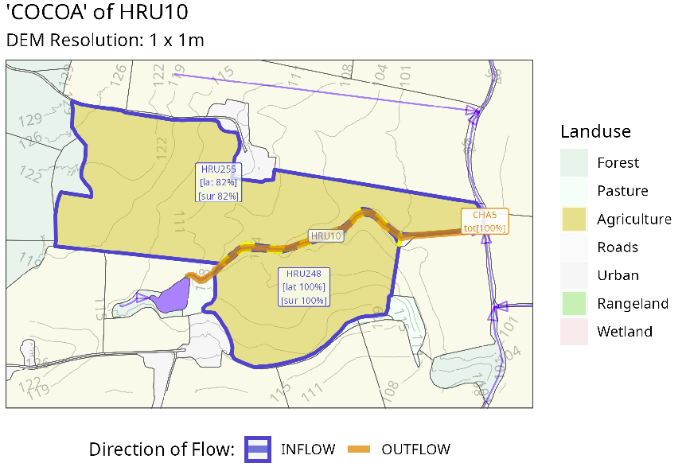
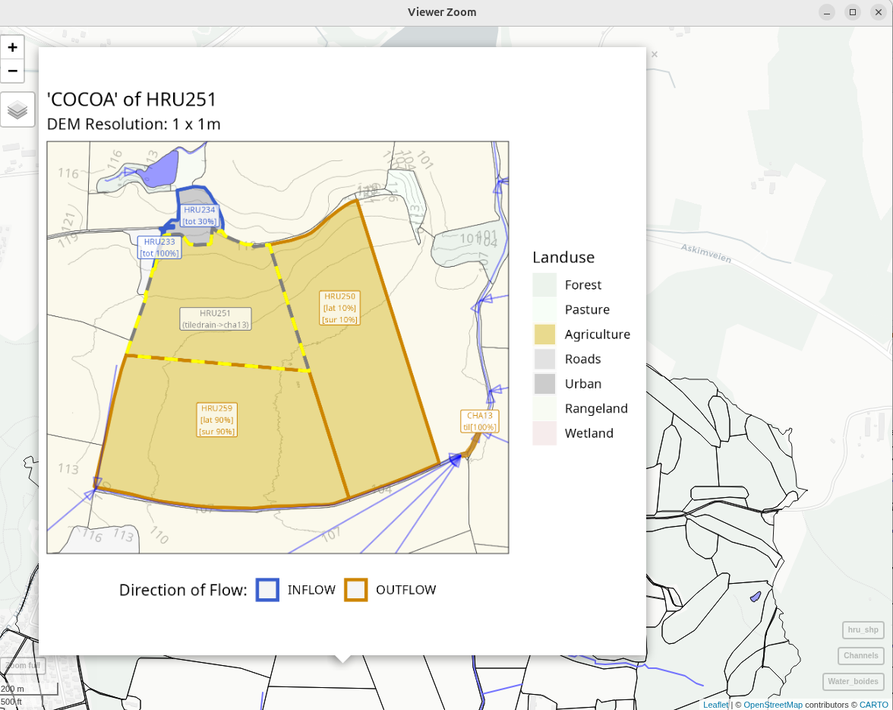

Visualize COCOA
Author: Moritz Shore (moritz.shore@nibio.no)
Date: March, 2026
This tool allows you to visualize the Contiguous Object Connectivity
Approach (COCOA) of SWATbuildR and the OPTAIN project,
which you can read more about here:
https://www.optain.eu/sites/default/files/delivrables/OPTAIN%20D4.2%20-%20Modelling_Protocols.pdf
The tool is simple to use if you have the prerequisites:
- A SWAT+ project created using SWATbuildR
- the ‘
land_connections_as_lines.shp’ file generated by this code
Please see the documentation of the function(s) for further details and notes.
require(miljotools)
cocoa_hru(
hru_id = 10,
buildR_dir = "../SWAT-skuterud/project_data/SWATbuildR/skuterud_buildR/",
agri_pattern = "a_",
directory = "../SWAT-skuterud/project_data/figures/connectivity",
save_to_png = F,
verbose = T
)Which would get you a plot that looks something like this:

You can also interactively plot ALL HRUs using the following function:
cocoa_vis(
buildR_dir = "../SWAT-skuterud/project_data/SWATbuildR/skuterud_buildR/",
RERENDER = TRUE,
directory = "../SWAT-skuterud/project_data/figures/connectivity",
verbose = TRUE
)This can take quite a while, therefore the RERENDER flag
exists, thus you only need to render all the plots once, and can
generate the interactive map without re-rendering
(RERENDER = FALSE). This can give you an interactive map
which can look somewhat like this:

The function can be improved in the following way:
- Expand the land use legend
- Incorporated connectivity of water objects
- Faster plotting?
- …